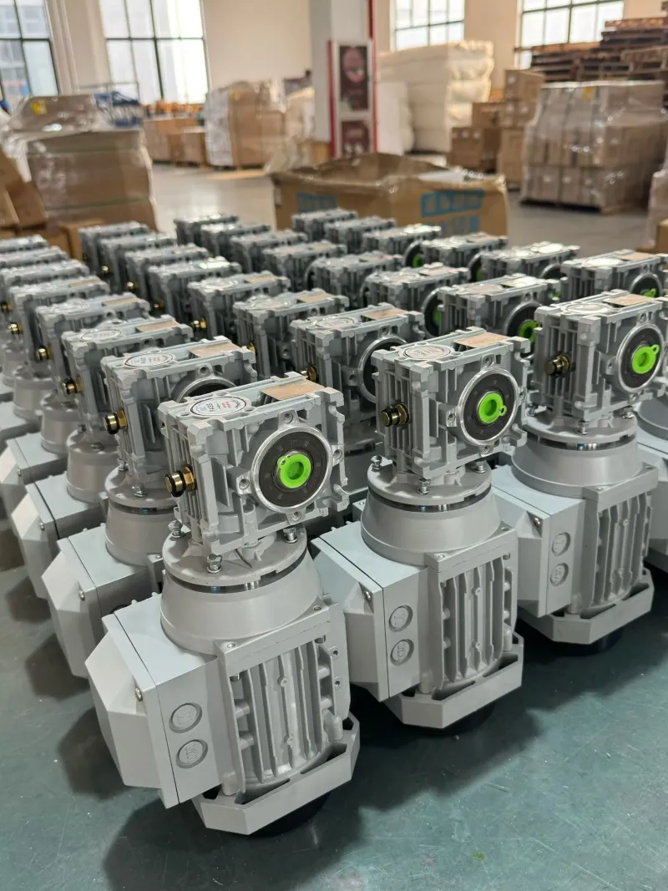

SMK Successfully Completed Shipment of Worm Gear Reducer Motors
We are pleased to announce that SMK Trans has successfully completed the production and preparation for shipment of another significant batch of high-quality worm gear reducer motors. This shipment is destined for our valued B2B partners overseas, continuing our commitment to providing reliable power transmission solutions globally.

The current batch includes our flagship NMRV series worm gearboxes paired with high-efficiency MS series three-phase motors. Each unit has undergone rigorous testing at our facility, including noise tests, torque capacity checks, and thermal performance evaluations, ensuring they meet the strict quality standards our international customers expect.
As a professional manufacturer with over 15 years of experience, SMK Trans specializes in customized solutions for various industrial applications, including conveyors, packaging machinery, and automation systems. Our factory direct supply model ensures competitive pricing and stable lead times for bulk industrial orders.
Need reliable industrial motors or gearboxes→
Contact our engineering team today for a customized quote and technical support.
INQUIRE NOW ON WHATSAPP